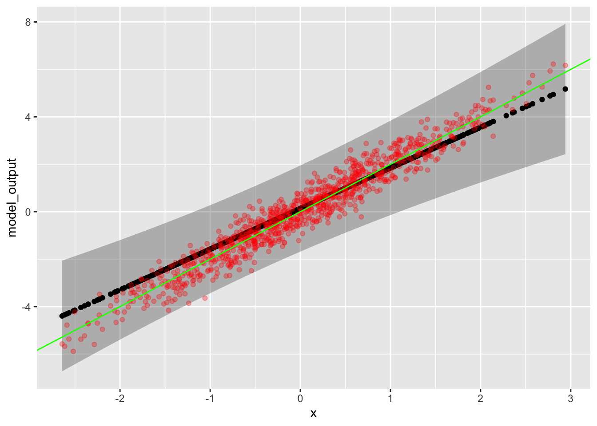

# Simple correlation
dag04 <- dag_make(x ~ eps(), y ~ 2*x + eps(0.5))
# "Error in variables", that is, we don't measure x exactly.
dag05 <- dag_make(.latent ~ eps(), x ~ .latent + eps(0.5), y ~ 2*.latent + eps(0.5))Math 300R NTI Lesson 26
Constructing a prediction interval
Objectives
In evaluating a model function, generate a prediction interval.
Interpret prediction bands as a series of intervals, one for each value of the model input.
Identify the two components that make up a prediction error, one that scales with \(n\) and the other that doesn’t.
Reading
TBD
Lesson
Setup
mod_eval()will create a prediction interval on each evaluation (if you ask it to).- Plotting out the prediction interval as a function of the input value gives a prediction band.
Here’s a demo which
- samples from the DAG and fits a model
- evaluates the model with test data, generating a prediction interval
- creates graphics to show the prediction band, the model function (in black), the “true” function (in green), and the actual output values from the DAG simulation
Samp <- sample(dag04, size=5)
Mod <- lm(y ~ x, data = Samp)
Test <- mod_eval(Mod, data = sample(dag04, size=1000), interval="prediction")
gf_ribbon(upper + lower ~ x, data = Test) %>%
gf_point(model_output ~ x) %>%
gf_point(y ~ x, color="red", alpha=0.3) %>%
gf_abline(intercept = ~ 0, slope = ~ 2, color="green")
- Make \(n\) large (say, \(n=500\)) and show how the actual values fit nicely within the prediction band.
- Run the simulation many times to verify that the band is right.
- Use the vertical thickness of the band to estimate the amount of noise in \(y\). (Remember, the band is \(\pm 2\) noise standard deviation.)
- Make \(n\) small (say, \(n=5\)) and show how the prediction band becomes wider and has a noticable curve. This reflects sampling variation in the fitted model.
- Often, the prediction band will seem much larger than it needs to be. But …
- Occasionally the test data will lie substantially outside the prediction band.
- It’s only “on average” that the band is right.
A data scientist makes many prediction models over their career. Sometimes, the prediction interval will be much wider than the actual error. People will accuse you of being overly humble, suggesting that your skills are better than you take credit for. Other times, the prediction interval will be too small. Then you will be accused of over-confidence. But both these outcomes are a matter of luck: whether your sample happened to be a good representation of the actual mechanism or not.
When the prediction bands are double-trumpet shaped, you are at risk of such “over-confidence” or “under-confidence.”
::: {.callout-note icon=false} ## Optional extension
This construction of prediction intervals is based on the idea that we measure the input variables exactly, but the output can involve some noise.
It can also happen that our measurement of the input quantities involves noise. This goes by the obscure name “error in variables.” dag05 simulates the error-in-noise situation. Note that the estimated function is systematically flatter than the actual function (which you can read from the DAG).
To demonstrate this, insert dag04 in place of dag05 in the simulation, and repeat many times.
Learning Challenges
- Construct prediction interval when evaluating a model function.
- Plot a prediction band.
- Check the consistency of the prediction band with the DAG mechanism for large \(n\).
- Is the width right?
- Is the slope right?
- For small \(n\) (say, \(n=5\)), how is the prediction band different than for large \(n\)?